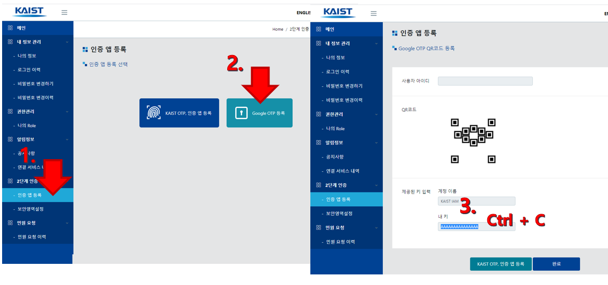
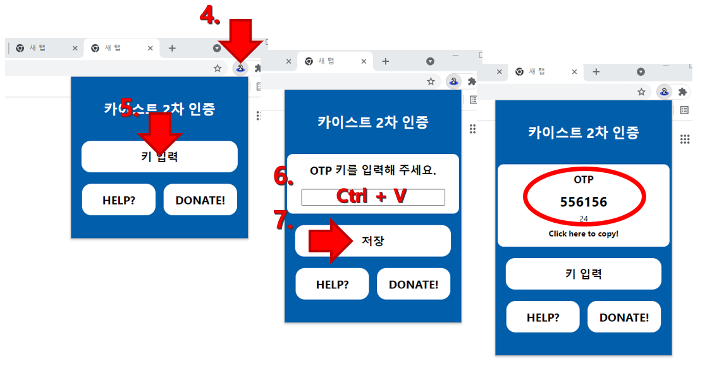
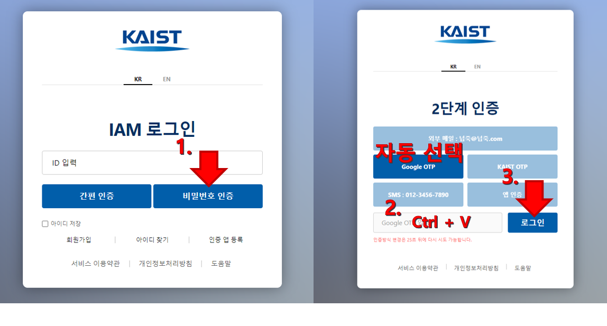

사용 방법
1. iam2.kaist.ac.kr에서 Google OTP 키 발급

iam2.kaist.ac.kr에서 위와 같은 방법으로 Google OTP 키를 발급받습니다.
2. 확장 프로그램에 키 등록

위와 같은 방법으로 확장 프로그램에 키를 저장한 후 OTP가 정상적으로 생성되는지 확인합니다.
3. 2차 인증하기

2차 인증 페이지에서 확장프로그램이 OTP를 자동으로 클립보드에 저장합니다. 입력 창에 붙여넣고 로그인 버튼을 누르면 2차 인증이 완료됩니다.
4. 기타 설정

상단 바에 고정, 시크릿 모드에서 허용 설정을 이용하여 보다 편리하게 사용 가능합니다.